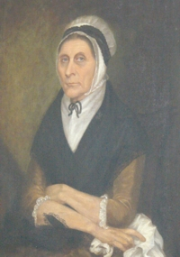

by
Stefan Bielinski
Barbara Marselis was born in September 1727. She was the daughter of Albany residents Johannes and Joanna Beekman Marselis. She grew up in a businessman's home located in the first ward.
In February 1758, Barbara was past her thirtieth birthday when she married a slightly younger carptenter-turned-skipper and and then surveyor named Hendrick Bogert. By 1770, five of their children were baptized at the Albany Dutch church where she was a pewholder.
In 1766, she was named in the will filed by her brother. In 1769, she was named to share in the estate of her widowed mother.
These Bogerts first lived near the waterfront in the first ward where Hendrick kept his sloop. Later, they would move to North Market Street.
The portrait shown here was painted during the first part of the nineteenth century.
Barbara Marselis Bogert died in October 1816 at the age of eighty-eight. She was buried in the Dutch church cemetery plot in Washington Park. Her husband lived for five more years.

notes
Portrait perhaps painted about 1805 and tentatively attributed to Ezra Ames. Described in EA, p. 348. Now in a private collection.
 Sources: The life of Barbara Marselis Bogert is CAP biography number 634. This profile is derived chiefly from family and community-based resources.
Sources: The life of Barbara Marselis Bogert is CAP biography number 634. This profile is derived chiefly from family and community-based resources.
first posted: 12/10/03; revised 2/17/07